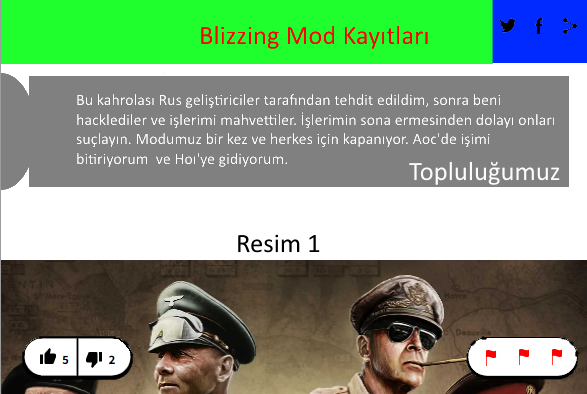
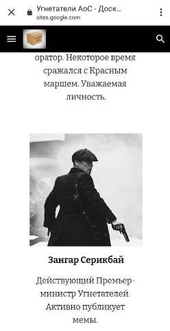

Центр моддинга aoc
Уже несколько лет существует очень критикуемая и неоднозначная в плане оценки серия игр Age of History, (прим. ранее Age of Civiliztions). Как и следовало ожидать, с лёгкой руки главы JakowskiGames, его гайдов по тому, как видоизменять игру, начали появляться моды, (прим. Мод — модификация компьютерной игры. Mod. — сокращение слова модификация в различных названиях и терминах). Таких "Модов- Пионеров" было огромное множество. Сейчас десятки вспомнят их названия и единицы их основателей. Практически все они закончили своё существование. Проблем, связанных с завершением работоспособности модификаций может быть множество, как говорится, от нехватки рабочего времени, до ошибок и багов ,которыми была полна игра. Но всё ли было так "гладко" на первый взгляд? Давайте разберёмся. Одной из первых модификаций стала Age of Darkness. Она была на обе части и конкурировала с другими, на то время молодыми Bloody Europe, Addon+, Blizzing Mod, ReSource, Civil и Crone of AoC. Модификация ReSource пала первой в этой гонке. Как написал сам автор , по причине неизвестной ошибки, которая не даёт заходить в сценарии. Мод и его место на форуме было удалено. Главой мода на тот момент был Йоханес Крайсл. Он делал мод на тему будущего и настоящего. Его работа была очень интересна общности и могла бы стать одной из самых популярных. Он один из первых начал делать перевод на русский и китайский, хотя не имел отношения к этим странам. Но, в один прекрасный момент, мода, как не бывало. Причём вся информация по нему была скоропостижно удалена, включая старые версии. Не кажется ли вам это странным? Начнём с того, что за месяц до этого происшествия, на странице в Facebook автор написал, что у него возникли проблемы с моддингом в России. С чем это могло быть связано? Одной из версий являлось то, что глава Аддона шантажировал Йоханеса взломом аккаунта и ликвидацией его в дальнейшем, если он добровольно не уйдёт с моддинга. Не сложно догадаться, что ультиматум был отклонён. В этом же месяце страничка была удалена, а на новом аккаунте была сделана запись "Már nem látom a civilizációk korszakában való munka lényegét, viszlát", что переводится, как "Я больше не вижу смысла работать в AoC, до свидания". Теперь проводим нехитрую цепочку размышлений. 1 Ультиматум и отказ 2 Краш 3 Падение модификации. Запомните эту схему, так как к ней мы вернёмся не раз. Следующих модов постигла схожая участь. Blizzing постигла схожая участь, но при этом они смогли сообщить о трагедии на своём сайте. Теперь, если внимательно посмотреть на цепочку, то можем найти удивительное сходство.

Далее началась история нынешнего Сегмента. Начали появляться новые отечественные моды, но всё также они имели свой взлёт и падение. Сейчас я не назову 5% тех модов, некоторые были модами-однодневками, но в большинстве своём они закрывались без причин или же взламывались, по подсчётам Степана Ростенко, за последние 2 года было закрыто более 3800 модов, около 60% из которых были закрыты по непонятным причинам и более 25% из-за краша. Степан Ростенко- один из олдов Сегмента. Он состоит в нём с первых его дней. Сам имел мод и был неоднократно взломан, ощутил на себе всё горе краша группы и кончину своего моддинга. После неуспешной борьбы ,он всё же решил забросить эту идею, но после того, как первым Центром Моддинга была предпринята попытка раскрытия культа аддона, он лично связался с администрацией и начал сотрудничество. Вместе с Центром, Степан до мелочей раскрыл всю аддоновскую сеть и теперь я готов поделиться ею. Во главе этой преступной организации стоит администрация Стратегикона и Аддона. Эта самая организация нами именуется, как "Клуб Семи", исходя из количества её руководителей. После Аддона идёт заключительная ранговая ступень. В неё входит администрация Sieg Edition и Grosser Kaiser. Фамилии постоянно на слуху, а потому оглашать их не столь важно. Так вот, заняв верховенствующие позиции в RUS сегменте, и потеряв доверие у большинства аудитории, из-за малопродуктивной работы, они всеми своими силами стараются сохранить своё влияние. Для этого была создана организация, так называемых "Угнетателей АоС", она же заимела свою группу с аналогичным названием. В неё входят верные слуги Клуба Семи. Задачи перед ними стоят такие:
1 Разрушать непокорные группы
2 Угнетать и всячески давить на владельцев "неправильных" групп
3 Управлять "группами-вассалами", то есть сдавшимися и принявшими их условия.
4 Контроль за "миропорядком"
От их действий ежедневно страдают огромное количество групп. Еженедельно закрываются в среднем по 20 сообществ, круглосуточно и без выходных подвергаются гонениям "неверные" сообщества. Для примера только один Центр был взломан 3 раза, не счесть попыток его подрыва многочисленными методами. Угнетатели в своей пропаганде используют самые примитивные методы воздействия, но при этом многочисленные. От простых оскорблений и монтажа, до нецензурной лексики, открытых угроз, ультиматумов и незацензурированых генеталей и других, самых отвратительных и неприемлемых для людского восприятия изображений. Благодаря помощи Андрея Швейцарова, основателя Age of Civilizations 2 | Противостояние. Он также столкнулся с "классическими" вариантами воздействия на него Угнетателями, также потерял и не сумел восстановить несколько своих групп по моддингу. Именно он первым заговорил о фазах, которые были окончательно раскрыты Центром.
1. Оскорбление лидера.
2. Монтаж лидера.
3. Угрозы.
4. Ультиматум.
5. Попытка взлома.
6. Краш.
Это их типичная схема подавления, но существует ещё несколько.
1. Всё то же оскорбление лидера.
2. Открытая агрессия.
3. Подсылка человека, работающего на Угнетателей, который сначала делает вид, что работает на мододела, а затем ,когда получает администратора или иную должность руководителя в группе, сливает её, уничтожив всю аудиторию, посты и другую информацию. До недавнего времени, на просторах ВКонтакте не было возможности отмены действий администрации, что приводило группы к безвозвратному вымиранию. Ещё одним методом является шантаж. Так как Угнетатели имеют посты администрации в большей части модов РУ Сегмента, то пользуясь своим положением, они шантажируют глав и администрацию "нескоренных" тем, что отрубят доступ к модам Сегмента. Большинство изначально противится этому, но после того, как их исключали и добавляли в ЧС, принимали условия агрессора. После создания народных движений, они выработали тактику "Война- это мир", "Свобода- это рабство", "Незнание- сила". Они копируют лозунги Центра о свободе моддинга ,но при этом загоняют его в зависимость от "монополизма"- понятия, характеризующего деятельность Клуба и подчинённых ему лиц. Тех, кто не просвещён в делах Клуба или занимает его позиции, они превозносят, как гениев Сегмента ,что характеризует второе понятие тактики, а под "Война- это мир" подразумевается их тактика ведения "партизанской войны". После заключения мира, если такое случается, они продолжают свои попытки крытого подрыва того, с кем заключён договор. Методы такого воздействия также различны, от той же крысы, которая его сливает или же специального накручивания подписчиков для бана сообщества для этого. Мало того, они превозносят свои заслуги, делая их "белыми и пушистыми", мол чистят сегмент ,от так называемых "раков". Кроме того, у них даже был свой сайт, где было чётко была описана часть их "заслуг" и лица главных руководителей. После того, как Центр стал использовать их против авторов, сайт скоропостижно был удалён. https://sites.google.com/view/ugnetatl/главная-страница. Что касается "господ" ,то они изначально придерживались политики непричастности, но сейчас их вина очевидна, они начали "репрессии" всех неугодных , подовляя народные массы. Они могут банить сколько угодно антимонополистов, но правду о себе, им не забанить. Отдельная благодарность за содействие Администрации Центра, Степану Ростенко, Андрею Швейцарову, Александру Крисю, Богдану Вавилину, Константину Славянину и другим борцам за народ и свободу. Особо опасные элементы: Иван Долганов, Дейв Мастейн, Людвиг Бетховен, Антон Егоров, Николай Тарновский, Антон Петушкин, Юрий Таборецкий, Ярослав Цеханович, Green Skull, Иван Диванов, Кирилл Сагадиев, Максим Матеша, Илья Блахотин, Кирилл Калецкий, Александр Централов, Степан Водяров, Зангар Серикбай, Павел Алембаев, Матвей Максименко, Захар Ходыкин, Александр Оксашев, Георгий Жуков, Владислав Вакулич, Андрей Шайкин, Дмитрий Романов, Павел Воротынцев, Дмитрий Фомичев, Степан Лопатин и глава Угнетателей- Артем Фомин. Мы рекомендуем не вступать с ними в контакт и игнорировать их группы. Призываем участвовать в освободительной борьбе и спасти сегмент от крушения!
